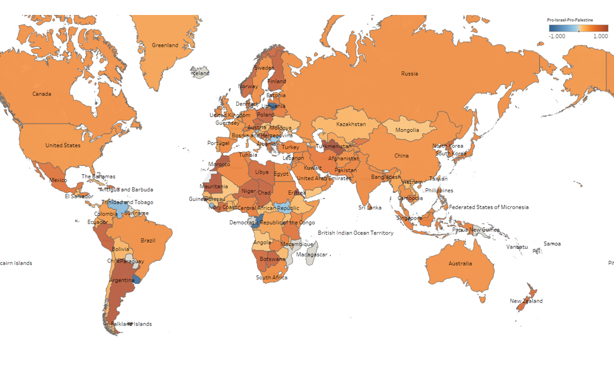
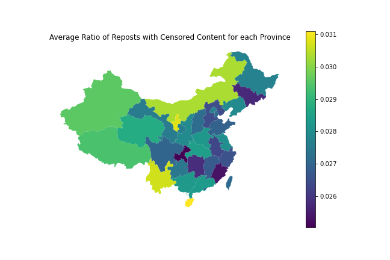
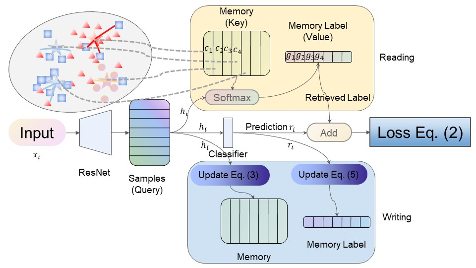
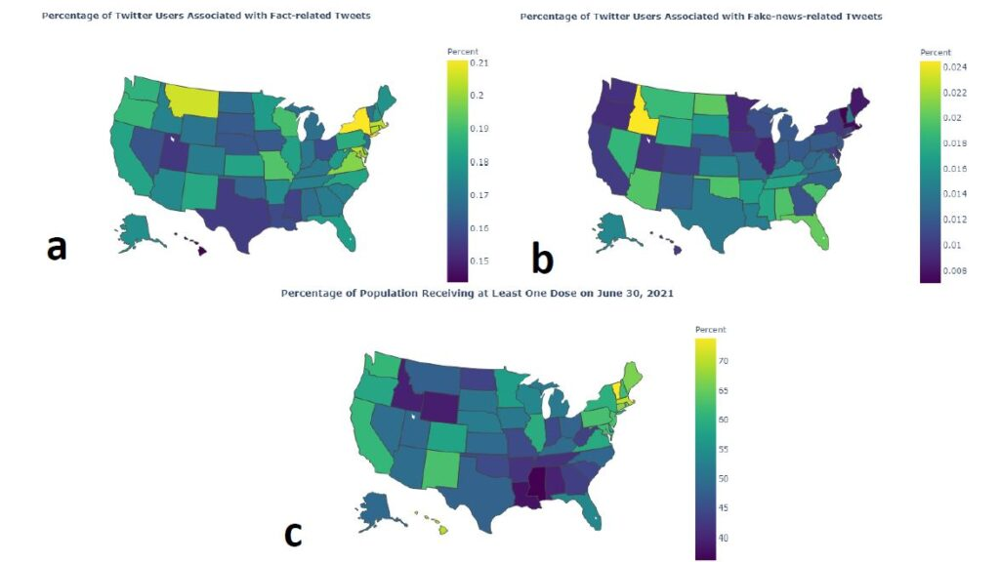

|
Research
Representative works are highlighted.
|
|

Click for zooming up.
|
Taking sides: Public Opinion over the Israel-Palestine Conflict in 2021
Arsal Imtiaz, Danish Khan, Hanjia Lyu, Jiebo Luo
International Workshop on Social Sensing (SocialSens): Special Edition on Belief Dynamics, AAAI International Conference on Web and Social Media (ICWSM), 2022
[PDF]
[Bibtex]
To understand the global sentiment on the conflict, we devise an observational study to understand the friendliness of countries, agglomerated by the sentiments of tweets. We collect Twitter data using popular hashtags around and specific to the conflict containing opinions neutral or partial to the two parties.
|

Click for zooming up.
|
Look behind the Censorship: Reposting-User Characterization and Muted-Topic Restoration
Yichi Qian, Qiyi Shan, Hanjia Lyu, Jiebo Luo
International Workshop on Social Sensing (SocialSens): Special Edition on Belief Dynamics, AAAI International Conference on Web and Social Media (ICWSM), 2022
[PDF]
[Bibtex]
We 1) create a web-scraping pipeline and collect a large dataset solely focusing on the reposts from Weibo; 2) discover the characteristics of users whose reposts contain censored information, in terms of gender, device, and account type; and 3) conduct a thematic analysis by extracting and analyzing topic information.
|

Click for zooming up.
|
Learning to Aggregate and Refine Noisy Labels for Visual Sentiment Analysis
Wei Zhu, Zihe Zheng, Haitian Zheng, Hanjia Lyu, Jiebo Luo
International Conference on Pattern Recognition, 2022
[PDF]
[Bibtex]
Our method relies on an external memory to aggregate and filter noisy labels during training and thus can prevent the model from overfitting the noisy cases. The memory is composed of the prototypes with corresponding labels, both of which can be updated online. We establish a benchmark for visual sentiment analysis with label noise using publicly available datasets. The experiment results of the proposed benchmark settings comprehensively show the effectiveness of our method.
|

Click for zooming up.
|
Misinformation versus Facts: Understanding the Influence of News Regarding COVID-19 Vaccines on Vaccine Uptake
Hanjia Lyu, Zihe Zheng, Jiebo Luo
Health Data Science, 2022
[PDF]
[Bibtex]
Using a sample of nearly four million geotagged English tweets and the data from the CDC COVID Data Tracker, we conducted the Fama-MacBeth regression with the Newey-West adjustment to understand the influence of both misinformation and fact-based news on Twitter on the COVID-19 vaccine uptake in the U.S. from April 19 when U.S. adults were vaccine eligible to June 30, 2021, after controlling state-level factors such as demographics, education, and the pandemic severity.
|
Publications
2022
- Arsal Imtiaz, Danish Khan, Hanjia Lyu, and Jiebo Luo, “Taking sides: Public Opinion over the Israel-Palestine Conflict in 2021,” International Workshop on Social Sensing (SocialSens): Special Edition on Belief Dynamics, AAAI International Conference on Web and Social Media (ICWSM), Atlanta, Georgia and online, June 2022.
- Yichi Qian, Qiyi Shan, Hanjia Lyu, and Jiebo Luo, “Look behind the Censorship: Reposting-User Characterization and Muted-Topic Restoration,” International Workshop on Social Sensing (SocialSens): Special Edition on Belief Dynamics, AAAI International Conference on Web and Social Media (ICWSM), Atlanta, Georgia and online, June 2022.
- Wei Zhu, Zihe Zheng, Haitian Zheng, Hanjia Lyu, and Jiebo Luo, “Learning to Aggregate and Refine Noisy Labels for Visual Sentiment Analysis,” International Conference on Pattern Recognition, Montréal, August 2022.
- Xiaofei Zhou, Jingwan Tang, Beilei Guo, Hanjia Lyu, and Zhen Bai, “Challenges and Design Opportunities in Data Analysis for ML-Empowered Scientific Inquiry – Insights from a Teacher Professional Development Study,” International Conference of the Learning Sciences, Virtual, June 2022.
- Hanjia Lyu, Zihe Zheng, and Jiebo Luo, “Misinformation versus Facts: Understanding the Influence of News Regarding COVID-19 Vaccines on Vaccine Uptake,” Health Data Science, 2022.
2021
- Hanjia Lyu, Yangxin Fan, Ziyu Xiong, Mayya Komisarchik, and Jiebo Luo, “Understanding Public Opinion toward the #StopAsianHate Movement and the Relation with Racially Motivated Hate Crimes in the US,” IEEE Transactions on Computational Social Systems, 2021.
- Tanqiu Jiang, Sidhant Bendre, Hanjia Lyu, and Jiebo Luo, “From Static to Dynamic Prediction: Wildfire Risk Assessment Based on Multiple Environmental Factors,” Special Session on Intelligent Data Mining, IEEE Big Data Conference, Virtual, December 2021.
- Xupin Zhang, Hanjia Lyu, and Jiebo Luo, “Understanding the Hoarding Behaviors during the COVID-19 Pandemic using Large Scale Social Media Data,” Special Session on Intelligent Data Mining, IEEE Big Data Conference, Virtual, December 2021.
- Hanjia Lyu, Junda Wang, Wei Wu, Viet Duong, Xiyang Zhang, Timothy D. Dye, and Jiebo Luo, “Social Media Study of Public Opinions on Potential COVID-19 Vaccines: Informing Dissent, Disparities, and Dissemination,” Intelligent Medicine, 2021.
- Ziyu Xiong, Pin Li, Hanjia Lyu, and Jiebo Luo, “Social Media Opinions on Working From Home in the United States During the COVID-19 Pandemic: Observational Study,” Journal of Medical Internet Research: Medical Informatics, 2021.
- Wei Wu, Hanjia Lyu, and Jiebo Luo, “Characterizing Discourse about COVID-19 Vaccines: A Reddit Version of the Pandemic Story,” Health Data Science, 2021.
- Xupin Zhang, Hanjia Lyu, and Jiebo Luo, “What Contributes to a Crowdfunding Campaign’s Success? Evidence and Analyses from GoFundMe Data,” IEEE Journal of Social Computing, 2021.
- Xiyang Zhang, Yu Wang, Hanjia Lyu, Yipeng Zhang, Yubao Liu, and Jiebo Luo, “The Influence of COVID-19 on people’s Well-Being: Big Data Methods for Capturing Working Adults’ Well-being and Protective Factors Nationwide,” Frontiers in Psychology, 2021.
- Long Chen, Hanjia Lyu, Tongyu Yang, Yu Wang, and Jiebo Luo, “Fine-Grained Analysis of the Use of Neutral and Controversial Terms for COVID-19 on Social Media,” International Conference on Social Computing, Behavioral-Cultural Modeling & Prediction and Behavior Representation in Modeling and Simulation (SBP-BRiMS), Virtual, July 2021.
- Karan Vombatkere, Hanjia Lyu, and Jiebo Luo, “How Political is the Spread of COVID-19 in the United States? An Analysis using Transportation and Weather Data,” International Conference on Social Computing, Behavioral-Cultural Modeling & Prediction and Behavior Representation in Modeling and Simulation (SBP-BRiMS), Virtual, July 2021.
- Yipeng Zhang, Hanjia Lyu*, Yubao Liu*, Xiyang Zhang, Yu Wang, and Jiebo Luo, “Monitoring Depression Trends on Twitter During the COVID-19 Pandemic: Observational Study,” Journal of Medical Internet Research: Infodemiology, 2021.
2020
- Siqing Cao, Hanjia Lyu, and Xian Xu, “InsurTech development: Evidence from Chinese media reports,” Technological Forecasting and Social Change, 2020.
- Hanjia Lyu, Long Chen, Yu Wang, and Jiebo Luo, “Sense and sensibility: Characterizing social media users regarding the use of controversial terms for covid-19,” IEEE Transactions on Big Data, 2020.
|
Service
Journal Reviewer
- Maternal and Child Health Journal
- Telematics and Informatics
- SAGE Open
- International Journal of General Medicine
- The Social Science Journal
- IEEE Transactions on Computational Social Systems
- Journal of Multidisciplinary Healthcare
- BMC Public Health
- IEEE Transactions on Knowledge and Data Engineering
- IEEE Transactions on Multimedia
- BMC Oral Health
- BMC Medical Research Methodology
- Journal of Computational Social Science
- Frontiers in Psychology
- Frontiers in Public Health
- Scientific Reports
- Discover Mental Health
Conference Reviewer
- ICWSM (21, 22)
- ICDM (21)
- TheWebConf (22)
- ISLS (22)
|

© 2022 Hanjia Lyu. All rights reserved.
Template borrowed from Jon Barron. Thanks!
|
|

{kind=link}
{kind=link}
{kind=link}
{kind=link}